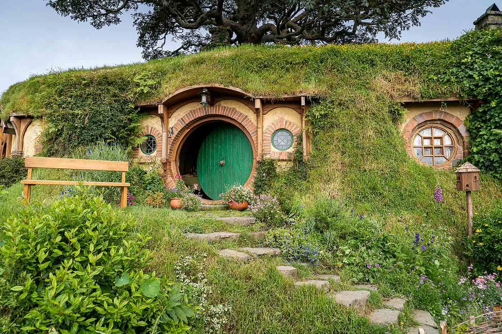
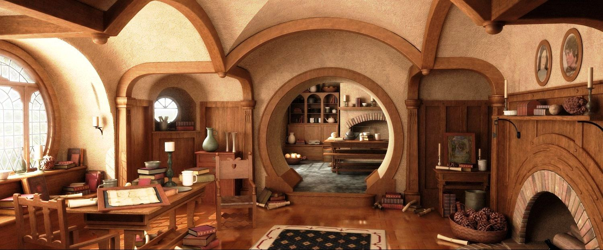

In a hole in the ground there lived a hobbit. Not a nasty, dirty,
wet hole, filled with the ends of worms and an oozy smell, nor
yet a dry, bare, sandy hole with nothing in it to sit down on
or to eat: it was a hobbit-hole, and that means comfort.

It had a perfectly round door like a porthole, painted green, with a
shiny yellow brass knob in the exact middle. The door opened on to
a tube-shaped hall like a tunnel: a very comfortable tunnel without
smoke, with panelled walls, and floors tiled and carpeted, provided
with polished chairs, and lots and lots of pegs for hats and coats - the
hobbit was fond of visitors. The tunnel wound on and on, going fairly
but not quite straight into the side of the hill - The Hill, as all the
people for many miles round called it - and many little round doors
opened out of it, first on one side and then on another. No going
upstairs for the hobbit: bedrooms, bathrooms, cellars, pantries
(lots of these), wardrobes (he had whole rooms devoted to clothes), kitchens,
dining-rooms, all were on the same floor, and indeed on the same passage.
The best rooms were all on the left-hand side (going in), for
these were the only ones to have windows, deep-set round windows
looking over his garden and meadows beyond, sloping down to the river.

This hobbit was a very well-to-do hobbit, and his name was Baggins.
The Bagginses had lived in the neighbourhood of The Hill for time out
of mind, and people considered them very respectable, not only because
most of them were rich, but also because they never had any adventures
or did anything unexpected: you could tell what a Baggins would say
on any question without the bother of asking him. This is a story of
how a Baggins had an adventure, found himself doing and saying things
altogether unexpected. He may have lost the neighbours' respect, but
he gained-well, you will see whether he gained anything in the end.